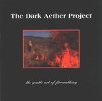

| Artist: | The Dark Aether Project |
| Title: | The Gentle Art Of Firewalking |
| Label: | Dark Aether Music DAP03 |
| Length(s): | 43 minutes |
| Year(s) of release: | 2002 |
| Month of review: | [04/2002] |
| 1) | Crossing The Threshold | 7.06 |
| 2) | Night Embrace | 4.24 |
| 3) | The Gentle Art Of Firewalking | 4.48 |
| 4) | Mask | 4.33 |
| 5) | 3rd Degree | 4.04 |
| 6) | Shades | 4.16 |
| 7) | Sparks Fly | 4.39 |
| 8) | Embers | 8.57 |
One of the main differences in the line-up is that instead of Ray Weston we now have Jennifer Huff doing the vocals. The vocals of Huff on this track are at first somewhat toneless, but later her vocals become more melodic. The music is thoughtful and focussed on evoking an atmosphere. Although the band does not go as far as that, but at times I was reminded of David Kerman and 5uu's. This impression by the way does not hold for the up-tempo vocal part which is quite accessible and poppy, and also the part I liked least.
The title track then is one in which the gurgling of various bass like instruments (the Warr guitar in fact) figure quite strongly. The music is moody and melodic with lots of repetition, but not boring. In fact, the music sounds a like an intro of some kind. And yes, towards the end the music does in fact gain in energy and the similarities to the King Crimson of the nineties becomes more evident. With the exception of the more psychedelically oriented guitar solo.
Mask opens as most of the track do: soothing and moody with a strong bass and stick [actually Warr guitar] presence over which Huff sings in a melodic somewhat unobtrusive way. Later on she loses her reserve a bit, but not for long. 3rd Degree opens strongly with urgent guitar work accented by the Warr guitar and again varied drums. An intense guitar dominated piece with the kind of repetition that works out well. As the ordinary guitar dominates the piece, the Warr guitar is allowed its place in the sun in the middle of the track.
Shades opens with Warr and turns into a King Crimson influenced track as far as it concerns the instrumental parts. The vocal parts are quite different, and do not manage to convince. I am not exactly sure what my problem with them is, but they seem to have been added as an afterthought. The music would have been fine without them.
Sparks Fly opens actively with that sense of urgence that the band can evoke well. It seems however that this seems to be restricted to the instrumental only tracks. Again the combination of psychedelic rock and those manic Crimsonesque guitar sequences reigns. The final track, Embers, is also the longest. This is an ethereal track, slowly evolving, long stretched with vocals that are spoken instead of sung. Like in parts of the first song, Huffs vocals are now more recitative and I like it more than when she simply sings. Allen Brunelle also adds his shadow vocals to Huff's. The bass and keyboards reign on this track [Adam Levin pointed out later that all instruments except the piano and the opening keyboartd part are on the Warr guitar], in which the guitar plays no role whatsoever. It stays moody and sombre throughout.